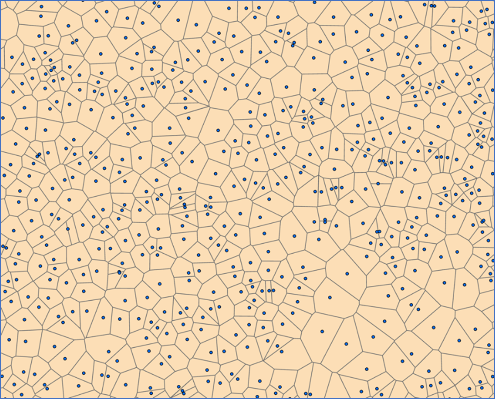
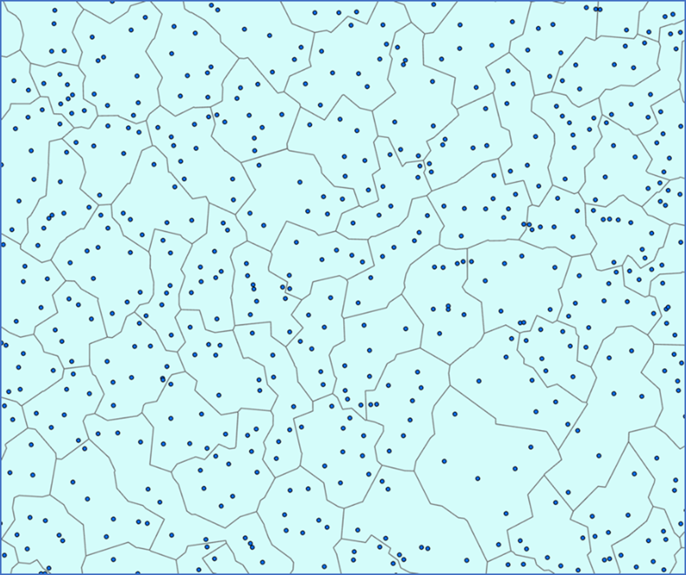

DisplayTB V01
This mapping dashboard was created by CVERA, UCD https://www.ucd.ie/cvera/ as part of a research program into Bovine Tuberculosis (bTB) being conducted by the Centre for the Department of Agriculture, Food and the Marine (DAFM). The National TB Forum highlighted the need for DAFM to communicate area risk of bTB to farmers. As such, CVERA have created an interface to allow stakeholders to view the current and recent bTB status of herds in their area of interest. Please note, this is an ongoing research project and the content is likely to change over time. The values presented are compiled by CVERA from data snapshots provided by DAFM. This may result in some errors of interpretation and may not account for errors of corrections in the source data held by DAFM. For this reason, the dashboard is considered only a research prototype and should not be used for official reporting purposes.
To protect the identity of individual farmers, a process was developed to aggregate farms into larger spatial units. A conventional grid square approach is unsuitable for this because of the variation in farm sizes across the country. Instead, a new spatial aggregation methodology was devised. The centroid of the largest fragment of land for each farm in Ireland was generated (for all active farms having livestock from January 2019 to December 2023). From this, all area in Ireland was split up evenly between these centroids through a process called Tessellation. This creates ‘Thiessen polygons’ for every farm (Figure 1).

Figure 1. Sample of Thiessen polygons created around the centroid of the largest fragment of land per farm for all farms in Ireland (herds classed as ‘active’ from January 2019 to December 2023).
These synthetic farm shapes were then merged into larger areas ensuring that there were at least 5 farms in each shape (using ‘GHS-SmartDissolve’ https://publications.jrc.ec.europa.eu/repository/handle/JRC122055 ) (Figure 2)

Figure 2. Herds collapsed into spatial units ensuring 5 or more herds for each unit.
The bTB herd histories were then summarised for each herd into the spatial unit in which they were assigned.
The dashboard is located at:
https://www.arcgis.com/apps/dashboards/9306f7eb60b1401a8b18f76f61f20aea
The dashboard can be viewed both in ‘Desktop’ mode an ‘Mobile’ mode.
In Desktop Mode:
The map window displays new breakdowns in the last 12 months. The dashboard items show the values of “new breakdowns in the last 12 months” and “new breakdowns in the last 3 months” with an additional table displaying the number of reactors over the last 5 years. The values update to reflect the extent of the map window (that is, they update with zooming to represent the values in the area on the map screen). An individual area can be ‘clicked’ to display detailed information including the number of herds in that spatial unit, the number of animals and the bTB testing information (see bottom of page). A rectangular selection can also be made to select one or more area units with the dashboard reflecting the selection. The selection must be removed to go back to viewing the values in the map window extent. The background can be changed from imagery to conventional maps and the foreground map can be turned off. Addresses can be looked up in the search window, as can EIRCODE. The legend can be made visible but does not appear as default.
In Mobile Mode:
Mobile mode is as above but without the table displaying reactor history. Users can opt to use their mobile device location. Click and select tools are available in mobile mode although the small screen size can make detailed selections difficult.
No information on user access is recorded by UCD, CVERA other than a count of views.
This dashboard will be subject to continuous change and updates. Bookmark the page in your browser for future reference.
For any additional information, please contact cvera@ucd.ie
Table items include:
· Number of herds per spatial unit
· Number of animals per spatial unit per year
· Number of ‘total’ reactors per spatial unit year
· Number of ‘standard’ reactors per spatial unit year
· Number of bTB tests carried out per spatial unit year
· Number of positive interferon gamma test per spatial unit per year
· Number of confirmed lesions detected per spatial unit per year
· The number of new breakdowns confirmed in the last 12 months (from end of Quarter 3, 2024)
· The number of new breakdowns confirmed in the last 3 months (from end of Quarter 3, 2024)